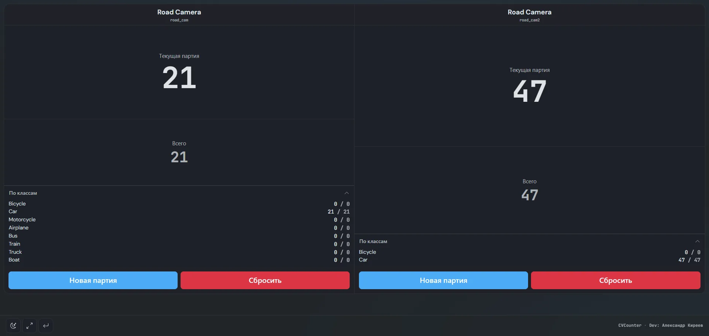

Ритейл и магазины
Учёт входящих и выходящих посетителей через дверные створы, расчёт посещаемости по часам и сменам для оптимизации графика работы торговой точки.
Open-source видеоаналитика для контроля потока людей в магазинах, торговых центрах, офисах и на проходных. Двунаправленный учёт входа и выхода через зоны, трекинг ByteTrack, работа с любыми IP-камерами без облачных абонентских плат.
Гибкая настройка полигональных зон позволяет точно считать проходящих людей в любой части кадра.
Учёт входящих и выходящих посетителей через дверные створы, расчёт посещаемости по часам и сменам для оптимизации графика работы торговой точки.
Оптический подсчёт числа людей, проходящих через входные группы, холлы и коридоры зданий, без необходимости ставить отдельный софт на каждый монитор.
Подсчёт посетителей на входах в выставочные павильоны, залы и галереи. Мониторинг суммарного количества вошедших за время проведения мероприятия.

Сравнение возможностей CVCounter с закрытыми облачными сервисами и аппаратными 3D-датчиками.
| Критерий | CVCounter (Open Source) | Облачные сервисы (SaaS) | Аппаратные 3D-датчики |
|---|---|---|---|
| Стоимость | Бесплатно (AGPL-3.0) | Подписка от 2 500 ₽/мес за камеру | Покупка от 50 000 ₽ за сенсор |
| Приватность (152-ФЗ / GDPR) | 100% локально (On-Premise) | Видеопоток уходит в облако | Локально, но закрытый протокол |
| Поддержка камер | Любые стандартные RTSP / USB камеры | Ограниченный список моделей | Только фирменные датчики вендора |
| Алгоритм трекинга | ByteTrack (устойчив к перекрытиям) | Базовый трекинг центроидов | Инфракрасный / стерео-сенсор |
| Зоны подсчёта | Произвольные полигоны, масштабирование, поворот | Фиксированные прямые линии | Ограниченная зона под сенсором |
| Отчёты и экспорт | A4 печать, CSV, JSON, REST API, Webhook | Экспорт только через личный кабинет | Интеграция требует проприетарного SDK |
От установки до первого отчёта о посещаемости проходит менее 10 минут.
Запустите install.bat или ./install.sh. Скрипт сам определит GPU и настроит окружение.
Укажите RTSP-ссылку вашей IP-камеры или выберите подключенную USB-камеру в веб-интерфейсе.
Прямо в браузере нарисуйте полигоны входа и выхода, укажите класс детекции (person) и порог уверенности.
Отслеживайте поток в реальном времени, выводите цифры на ТВ-экран и сохраняйте сменные отчёты.
Ответы на ключевые вопросы по внедрению подсчёта людей.
Да. CVCounter подключается к любым существующим IP-камерам по стандартному протоколу RTSP (H.264/H.265), а также поддерживает веб-камеры USB и предварительно записанные видеофайлы.
CVCounter использует алгоритм трекинга ByteTrack. Каждому обнаруженному человеку присваивается уникальный числовой ID, который отслеживается на протяжении всей траектории движения в кадре даже при кратковременном перекрытии другими людьми или предметами интерьера.
Нет. Система работает на 100% локально (On-Premise) на вашем сервере или офисном ПК. Видеопоток не покидает пределы локальной сети, что гарантирует полную безопасность и соответствие Федеральному закону №152-ФЗ «О персональных данных» и GDPR.
Рекомендуемая высота подвеса камеры — от 2.5 до 4.5 метров с углом наклона 45°–60° к направлению движения людей, либо вид строго сверху (Top-down). Для стабильной работы нейросети достаточно разрешения 720p или 1080p при частоте от 15 кадров в секунду.